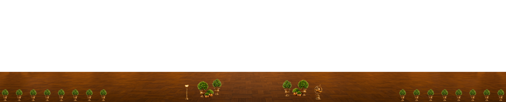
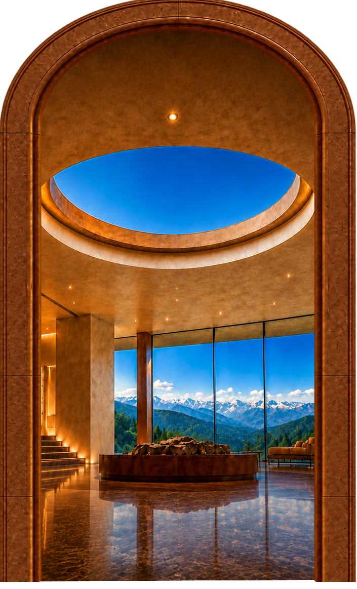
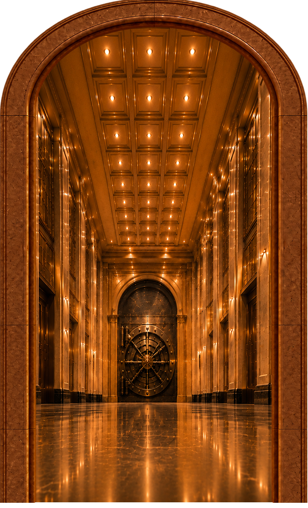
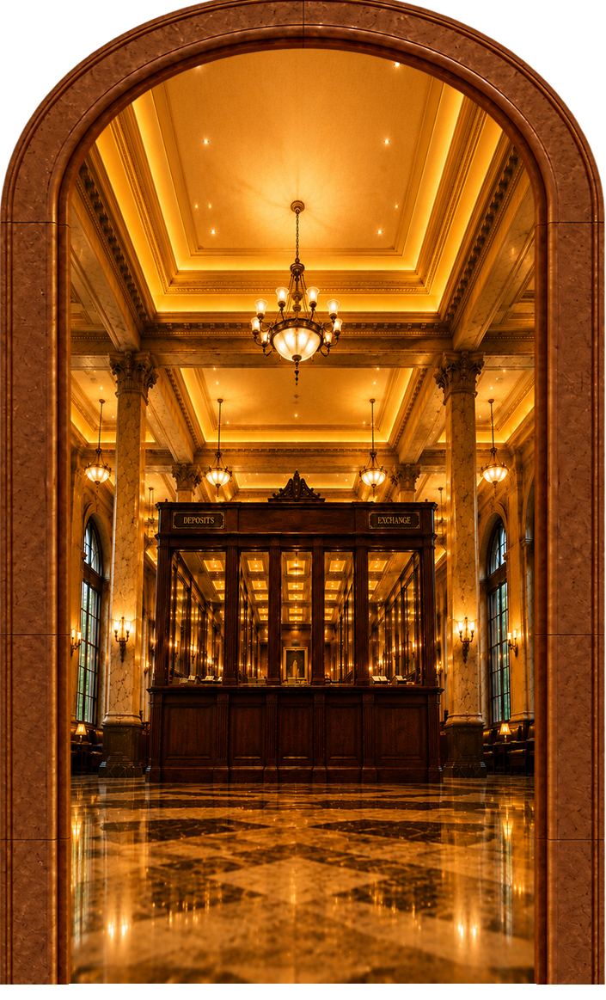
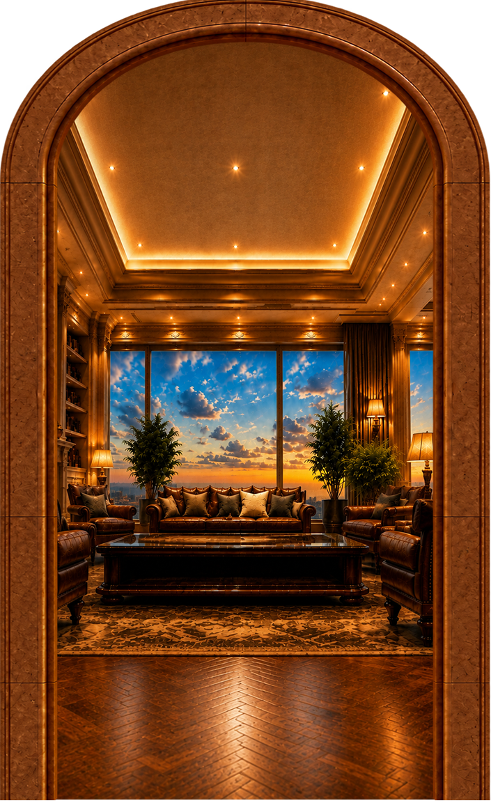
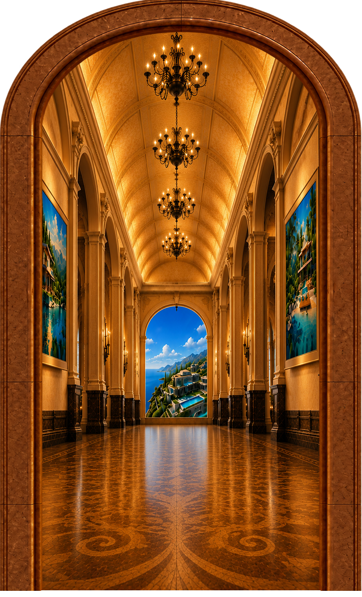
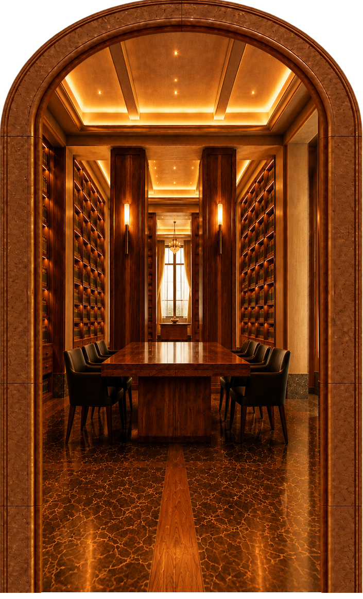

Experience

Global Reserve

Move Money

Global Connections

Global Dream

Record Library









Content for this section will be added later.
Content for this section will be added later.
Content for this section will be added later.
Content for this section will be added later.
Content for this section will be added later.
Content for this section will be added later.